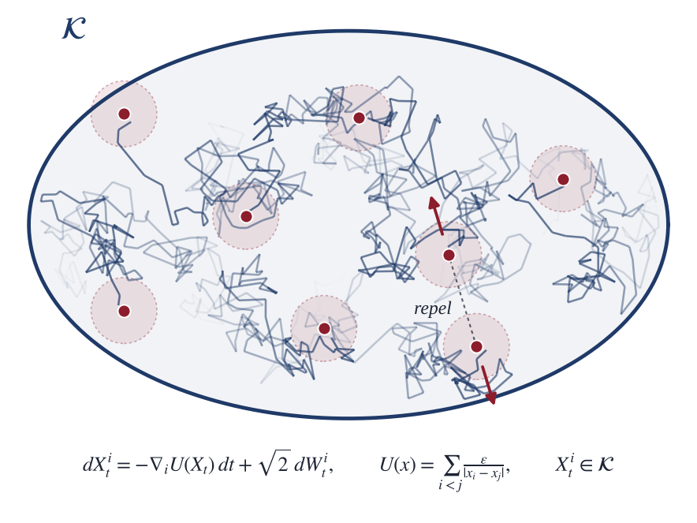
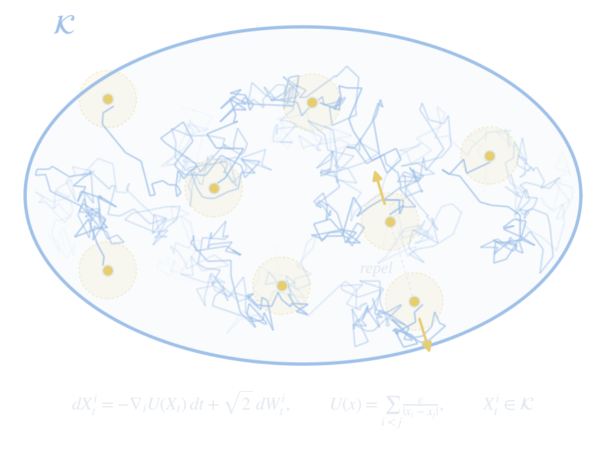

In progress · 2026
Constrained Langevin Dynamics with Singular Repulsion
With David P. Herzog, Iowa State University
Particles diffuse inside a bounded region while strongly repelling one another at short range. Standard numerical steps can push them toward collisions, and projecting back can create collisions of its own. We are developing a tamed-proximal Langevin scheme that handles the singular repulsion directly while respecting the boundary, with guarantees on stability, collision avoidance, and convergence.
- Well-posedness
- Invariant measures
- Stable discretization